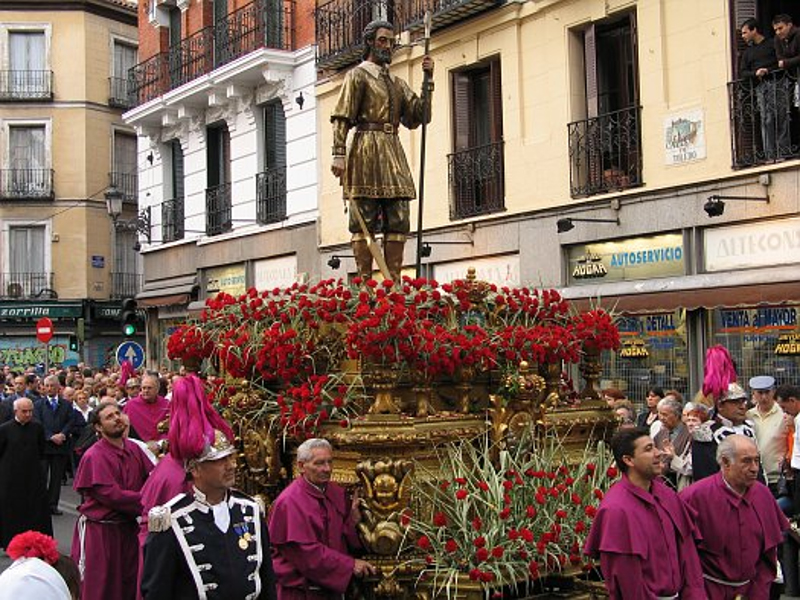
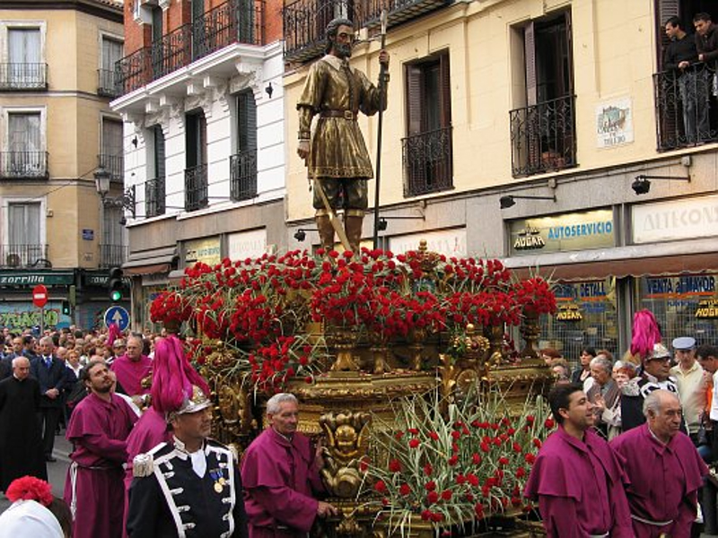

1º DAM
EFECTOS DINÁMICOS JAVASCRIPT
El Madrid mozárabe del siglo XI tenía a un joven pocero, zahorí, labrador, hijo de Pedro e Inés, que vivía en la zona de San Andrés, lo que hoy es el Barrio de La Latina. Castizo desde la cuna.
El joven Isidro viajó a Torrelaguna donde conoció a su mujer, María Toribia, la cual también sería santa y conocida como María de la Cabeza. Y es en la vejez cuando el Isidro que encontraba agua donde nadie más lo hacía, se convirtió para todos en algo más. En el Códice de San Isidro solo se detallan cinco de sus milagros, aunque otros libros hablan de más de 400. No fue beatificado San Isidro hasta el siglo XVII, y lo que nos ha llegado es una mezcla de leyenda e historia. 
